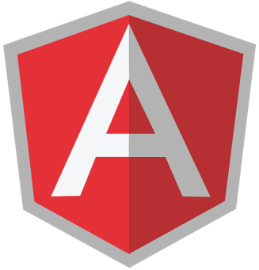
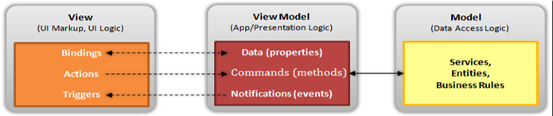
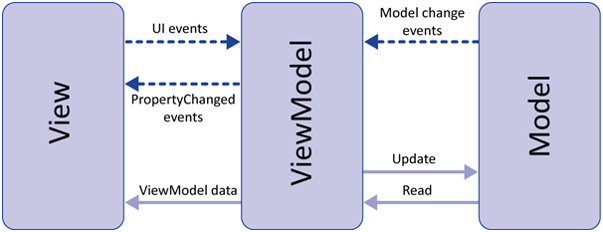
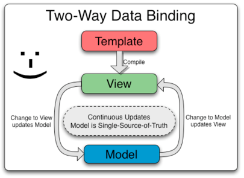
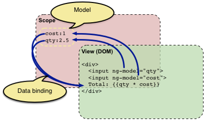
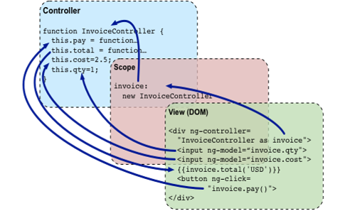

Créé par Google en 2009 afin de faciliter la testabilité et la maintenabilité des applications front-end.
AngularJS s'oriente autour de quelques concepts clés :
Il s’agit d’un des Frameworks JavaScript les plus appréciés pour réaliser des Single Page Application.
Il en existe bien d'autres :
Actuellement, AngularJS est en version 1.5.8.
La version 2 est en Release Candidate et devrait sortir prochainement.
Support :
AngularJS se base sur le pattern Model View ViewModel (MVVM).
Il s'agit pour vulgariser d'un pattern MVC accentué par un data binding évennementiel.
 Inclure la librairie avec bower
> bower install angular
Définir le contexte d’exécution d’AngularJS (rootScope)
(function(angular) {
'use strict';
//Module principal
angular.module('app', []);
})(window.angular);
ng-app est la directive qui définie le scope d’un traitement AngularJS.
Angular utilise une logique modulaire.
Découper l’application en modules afin de faciliter :
Chaque module va contenir contrôleur, vues, services ...
Bonnes pratiques :
Nous avons déjà vu précédemment qu’un module principal était nécessaire pour initialiser l’application AngularJS.
// Déclaration d'un module
var module = angular.module('test', []);
// Injection de ce module dans le main module
var app = angular.module('app', ['test']);
La librairie AngularJS se compose :
Voici quelques modules AngularJS :
Téléchargement de dépendances :
> bower install angular-cookies
> bower install angular-resource
Inclusion des fichiers :
Inclusion des modules au main module :
// Injection des dans le main module
var app = angular.module('app', ['ngCookies', 'ngResource']);
Angular permet l’écriture d’expression dynamique dans les templates.
Syntaxe {{ }} pour indiquer une expression à évaluer
Cette expression doit être une expression JavaScript valable
{{ 2 + 2 }}
{{ a + b }}
{{ person.name }}
{{ items[0] }}
Les variables utilisées dans une expression ne sont pas recherchées dans l’object «window» mais un «scope».
Voir aussi http://handlebarsjs.com/Angular permet un double binding des données entre la vue et le modèle.
Il est donc très facile de maintenir l’affichage des champs en accord avec le modèle.
Model : {{ name }}

Le scope représente le modèle de l’application et le contexte d’exécution pour les expressions.
Tous les scopes sont organisés de manière hiérarchique et héritent du scope applicatif rootScope.
Le scope sert de «glue» entre la view et le controller.
Lié une vue à un contrôleur via la directive ng-controller.
Le contrôleur contiendra un ensemble de variables et méthodes accessibles depuis la vue grâce à l’objet scope.
La déclaration d’un contrôleur est simple, il s’agit d’une simple fonction.
Cette fonction doit être référencée dans le Framework :
var app = angular.module('app');
app.controller('Test', function(){
this.name = 'my name';
});
Model : {{ ctrl.name }}
var app = angular.module('app');
app.controller('Test', function($scope){
$scope.name = 'my name';
});
Model : {{ name }}
Il s'agit d'un principe de base du Framework.
Elle permet l’utilisation d’objet sans s’occuper de l’instanciation.
app.controller('Test', function($scope){
$scope.name = 'my name';
});
L’injection de dépendance peut se faire sur tout objet référencé dans angular (controller, service…)
// Déclaration avec injection de dépendances
app.controller('Test', ['$scope', 'service', function(a, b){
a.name = 'my name';
}]);
//Constructeur du contrôleur
var Test = function(a, b) {
a.name = 'my name';
}
//Injection
Test.$inject = ['$scope', 'service'];
// Instanciation
app.controller('Test', Test);
Attention à la minification (ng-annotate).
app.controller('Test', function($scope){
$scope.name = 'my name';
});
Nous les avons déjà utilisé (ng-app, ng-controller).
Une directive est un comportement que l’on va associé à un élément du DOM.
Elle peut être utilisée en tant qu’élément à par entière, attribut, nom de classe, commentaire.
Le compilateur HTML d’Angular va associé un comportement aux directives présentes dans le template
app.controller('Test', function($scope){
$scope.name = 'my name';
});
app.directive('myName', function(){
return {
retrict: A, // A, E, M, C
template: 'Bonjour {{name}}'
}
});
Le template peut être spécifié :
La directive «myName» déclarée précédemment va s'utiliser de la manière suivante :
Cette fonction permet la manipulation de l'élément DOM associé à la directive et de ses enfants.
Elle se déclare dans la directive :
app.directive('myName', function(){
return {
retrict: A, // A, E, M, C
template: 'Bonjour {{name<}}'
link: function(scope, element, attrs) {
element.css({backgroundColor: 'lightgrey'});
}
}
});
Des paramètres peuvent être passés aux directives avec la déclaration d'un scope :
scope : {
color: '=color'
}
Le Framework fournie un ensemble de directives :